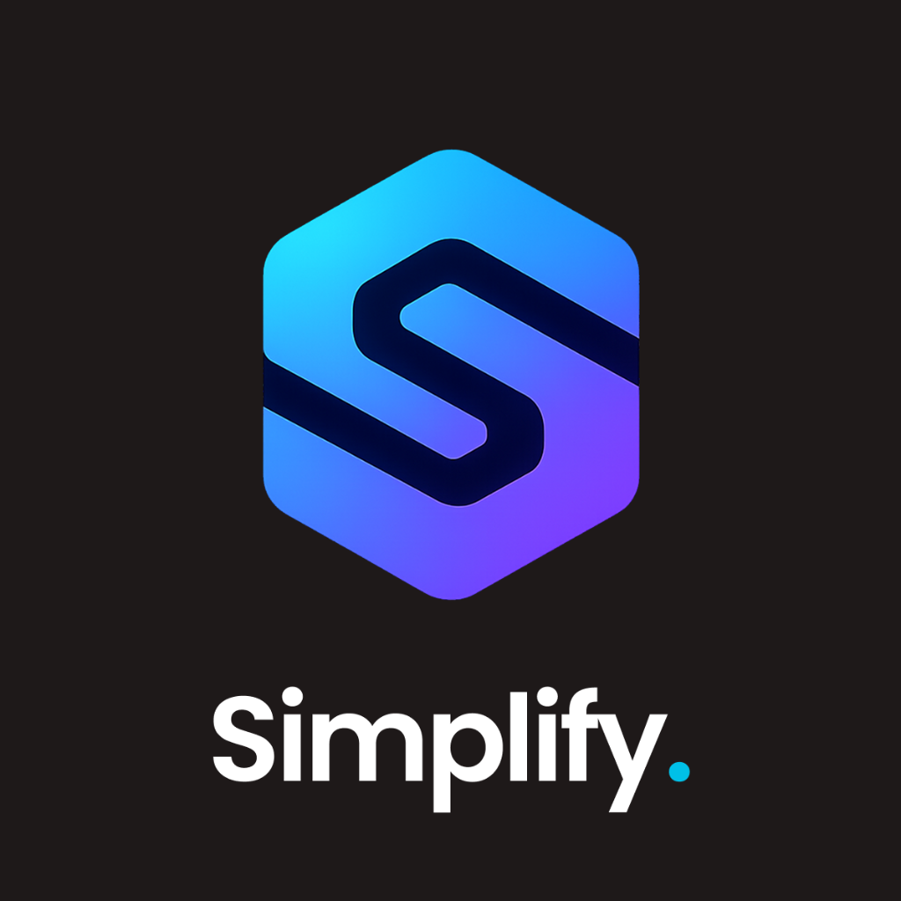
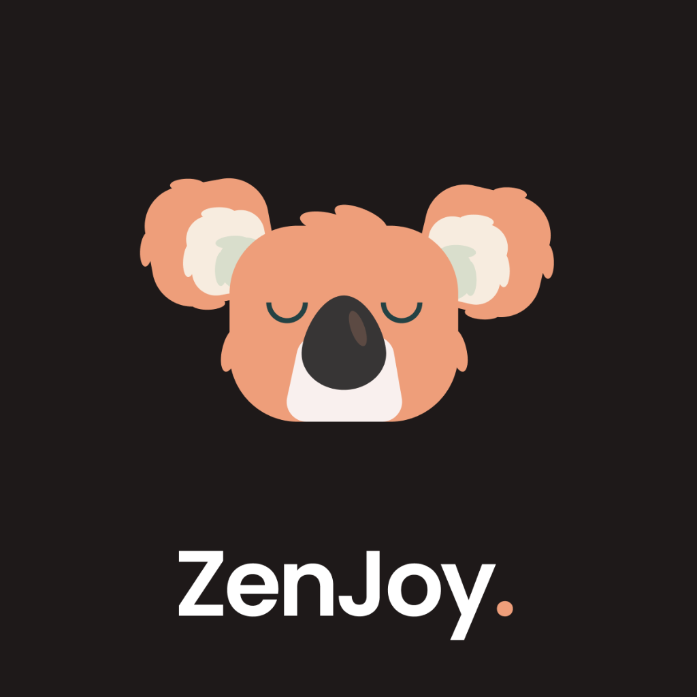

Solving Design
Problems Since 2017
Hi, I am Saransh
Lead Product Designer
Over the past 9+ years, I've driven product discovery and UX strategy for B2B SaaS and AI platforms, transforming complex technical workflows into simple, user-centered designs.
Leading design strategy for complex ecosystems.
Shipped SaaS apps, tools, and design system components.
Collaborated with Nokia, Dentsu, ADIA, and global giants.
Integrating generative workflows and prompt parameters.
Simplifying complex data queries, rules, and workflows.
AI-Powered Product Design Workflow
I combine AI with strategic product thinking to reduce manual effort, eliminate repetitive tasks, and focus more time on solving complex user and business problems.
AI-Powered Discovery
- Generate user personas
- Analyze business requirements
- Extract product opportunities
- Create JTBD and user stories
Research Acceleration
- Competitor benchmarking
- UX pattern analysis
- Industry trend identification
- Feature comparison matrices
Information Architecture & Flows
- Generate user journeys
- Create task flows
- Validate edge cases
- Identify missing scenarios
AI-Assisted Wireframing
- Rapid layout generation
- Multiple concept exploration
- Screen structure validation
- Faster iteration cycles
Visual Design & Design Systems
- Generate component variants
- Design consistency checks
- Auto-generate documentation
- Faster system scaling
UX Writing & Content Design
- Microcopy creation
- Empty states
- Error messages
- Onboarding content
Design Reviews & Validation
- Accessibility checks
- UX audits
- Edge-case identification
- Cognitive load assessment
Documentation & Handoff
- PRDs & BRDs
- User Stories
- Acceptance Criteria
- Developer Handoff Notes
How I Approach Complex Product Problems
Concept to Launch — A structured 5-step methodology to transform business ambiguity into high-adoption B2B SaaS products.
Discovery & Research
Understanding the Ecosystem
Deep-diving into B2B SaaS domains, user shadowing, and technical constraints analysis to align target expectations.
Activities
- Stakeholder Interviews
- User Shadowing
- Competitor Auditing
Key Deliverables
Definition & Strategy
Scoping the Architecture
Synthesizing raw research data to define precise workflows, system bounds, and prioritized feature scopes.
Activities
- Workflow & Journey Mapping
- Feature Prioritization
- IA Scoping
Key Deliverables
System Ideation & Layouts
Structural Explorations
Rapidly mapping information hierarchy, exploring screen variants, and building low-fidelity frameworks to ensure zero user friction.
Activities
- Wireframe Generation
- Layout Exploration
- Usability Validation
Key Deliverables
Interface Design & Systems
High-Craft Systems Integration
Engineering visually premium interfaces anchored in strict modular token design systems to guarantee consistency.
Activities
- Hi-fi UI Design
- Component Building
- Tokens Setup
Key Deliverables
Validation & Launch Handoff
Quality & Code Translation
Testing high-fidelity flows with target users, debugging states, and crafting precise specs for dev handoff.
Activities
- Usability Testing Loops
- Detail Spec Sheets
- Sprint Audits
Key Deliverables
Projects That Changed How I Think About Design

Simplify
How AI transformed product documentation and delivery workflows.
K12 Learning Platform
Designing an intuitive learning platform for students, tutors, and administrators.
Nokia Nuage Networks
Designing port and domain networking dashboards for software-defined networking solutions.

ZenJoy
A meditation and wellness app designed to help users manage depression, anxiety, and anger issues.
Beyond Designing Screens
Product Strategy
Identifying emerging product opportunities, running competitive audits, and defining strategic roadmaps based on success metrics.
Stakeholder Collaboration
Aligning executives, PMs, and developers on unified UX goals through structured framing sessions and product reviews.
Design Leadership
Drove UX vision across complex platforms, balancing technical systems with intuitive layout flows.
Pre-sales & Solutioning
Translating RFPs into interactive prototypes and product stories that illustrate core value to prospects.
Team Mentoring
Mentored 5+ designers, refining visual craftsmanship and building career growth paths.
Design Systems
Structuring tokens and component libraries to bridge design tools with development, saving hundreds of engineering hours.
Delivering Tangible Business Value
Client Collaborations & Testimonials
Partnering with global enterprise brands and growth-stage companies to deliver measurable product design outcomes.
Saransh brought clarity to a highly fragmented enterprise workflow. His systems-thinking approach restructured our core navigation, driving a significant boost in user task completion rate.
Collaborating with Saransh was a developer's dream. He doesn't just design beautiful screens; he understands component logic and developer handoff, which reduced our front-end refinement time by 40%.
Saransh’s customer-focused approach and rapid prototyping allowed us to validate concepts in days instead of weeks. He possesses a rare combination of UI craftsmanship and product strategy.
Saransh possesses an incredible ability to balance business goals with intuitive user experiences. His work on our SaaS networking tools turned complex analytics into clean, actionable dashboards.
Saransh's design leadership and mentorship helped raise our entire team's standard. He brought structured design systems thinking that unified products across multiple business units.